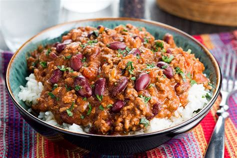

Chili con carne
Tiempo:1 hora
Dificultad:Media
Ingredientes
- 500g de carne molida
- 1 lata de frijoles rojos
- 1 pimiento rojo
- 1 cebolla
- Tomate triturado
- Especias al gusto
Pasos
- Sofreír la cebolla y el pimiento picados.
- Añadir la carne molida y cocinar hasta dorar.
- Incorporar los frijoles, el tomate triturado y las especias.
- Cocinar a fuego lento durante 30 minutos.